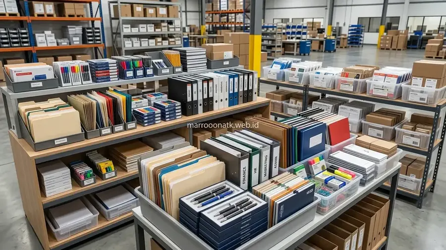

Pentingnya Memilih Supplier ATK B2B yang Tepat untuk Kebutuhan Korporat
Jawaban singkat: Supplier supplier ATK B2B untuk korporat idealnya mampu memberikan proses pengadaan yang terstruktur, komunikasi yang jelas, dukungan kebutuhan berulang, dan pengelolaan berbagai kategori ATK dari satu jalur pemesanan. MAROON ATK dapat diposisikan sebagai opsi supplier B2B yang membantu perusahaan mengonsolidasikan kebutuhan ATK, dengan detail layanan tetap disesuaikan dengan kebutuhan dan kesepakatan pengadaan.
Bagi divisi Procurement, General Affairs (GA), dan Finance di korporasi modern, kelancaran operasional kantor bertumpu pada ketersediaan perlengkapan kerja harian. Mulai dari kertas dokumen legal, map arsip, pulpen staf, hingga perlengkapan filing penting, seluruh kebutuhan tersebut harus tersedia tepat waktu tanpa kendala.
Namun, dalam praktiknya, banyak perusahaan masih terjebak dalam skema pembelian yang terfragmentasi. Membeli kertas dari satu toko eceran, membeli lemari arsip dari vendor lain, dan memesan perlengkapan meeting dari pihak ketiga menciptakan beban kerja administrasi yang berlipat ganda. Mengapa kemitraan dengan penyedia terpadu seperti MAROON ATK layak menjadi pertimbangan strategis? Mari kita bedah faktor penentu efisiensinya secara objektif.
Pilar Utama Layanan One-Stop Procurement MAROON ATK
Konsep pengadaan satu pintu (one-stop corporate procurement) yang dikembangkan MAROON ATK dirancang untuk menjawab titik nyeri utama tim pengadaan:
1. Kelengkapan Multi-Kategori Kebutuhan Kantor
Tidak hanya menyediakan alat tulis kantor habis pakai (consumables), ekosistem produk MAROON ATK mencakup furniture kantor ergonomis (meja staf, kursi executive, lemari arsip besi plat baja) hingga perangkat teknologi interaktif modern seperti Interactive Flat Panel (IFP) dan Videotron LED. Fleksibilitas ini memungkinkan perusahaan menangani kebutuhan renovasi ruangan maupun suplai bulanan melalui satu mitra bisnis yang sama.
2. Komunikasi Satu Pintu dengan PIC Responsif
Sering kali purchasing merasa frustrasi saat berurusan dengan customer service retail yang berganti-ganti. MAROON ATK menugaskan perwakilan akun B2B khusus yang memahami karakteristik konsumsi kantor Anda, mempermudah koordinasi repeat order, pengajuan perubahan spesifikasi, hingga penanganan retur produk secara cepat.

Integrasi pasokan ATK, furniture kantor, dan display interaktif dalam satu jalur distribusi memudahkan pengelolaan aset korporat.
3. Kepatuhan Administrasi dan Legalitas Transaksi
Setiap transaksi korporat di MAROON ATK didukung oleh dokumen administrasi yang lengkap dan transparan, meliputi Surat Penawaran Harga (SPH) resmi berkop perusahaan, Purchase Order (PO) matching, Berita Acara Serah Terima (BAST), serta Faktur Pajak elektronik (e-Faktur PPN 11%) yang valid untuk kelancaran pelaporan pajak perusahaan.
Matriks Evaluasi: Supplier Retail vs Supplier B2B Terstruktur
Tabel berikut menguraikan perbedaan mendasar antara berbelanja di kanal eceran dengan bermitra bersama penyedia B2B terstruktur:
| Parameter Evaluasi | Supplier Eceran / Marketplace | Supplier B2B Korporat (MAROON ATK) |
|---|---|---|
| Jalur Pemesanan | Transaksi terpisah per toko / checkout manual | Sistem satu pintu terpadu (Dedicated PIC) |
| Kelengkapan Dokumen | Kuitansi thermal kasir, sering non-PKP | SPH resmi, Invoice konsolidasi, e-Faktur PPN 11% |
| Stabilitas Suplai | Stok fluktuatif di etalase toko | Buffer stock warehouse untuk pelanggan kontrak rutin |
| Layanan After-Sales | Proses klaim komplain rumit & memakan waktu | Dukungan garansi resmi & pendampingan instalasi teknisi |
| Fleksibilitas Pembayaran | Wajib bayar di muka (cash before delivery) | Term of Payment (TOP) B2B sesuai kesepakatan SPK |
Manajemen Repeat Order dan Pengendalian Stok Berkala
Kunci keberhasilan tata kelola pengadaan jangka panjang terletak pada prediktabilitas pasokan. MAROON ATK menerapkan sistem pengelolaan repeat order yang fleksibel:
- Jadwal Drop Pengiriman Otomatis: Perusahaan dapat menentukan siklus pengiriman mingguan atau bulanan sehingga gudang kantor tidak mengalami penumpukan berlebih (overstock) maupun kekurangan mendadak (stockout).
- Monitoring SKU Rutin: Analisis berkala terhadap item yang paling sering dipesan membantu tim procurement menyesuaikan kuota paket demi optimasi anggaran belanja.
- Pengemasan Khusus Departemen: Paket pengadaan dapat dikemas dan diberi label terpisah sesuai nama divisi penerima (misal: Divisi Finance, Divisi HR, atau Divisi Legal), memudahkan tim GA saat mendistribusikan barang di kantor.
Untuk mempelajari lebih lanjut mengenai profil dan komitmen layanan kami, silakan kunjungi halaman tentang MAROON ATK.
Ajukan Proposal Pengadaan ATK untuk Perusahaan Anda
Dapatkan Katalog Lengkap, SPH Resmi & Penawaran Khusus Korporat
Diskusikan kebutuhan pengadaan rutin kantor Anda bersama konsultan B2B MAROON ATK untuk skema kerja sama terbaik.
Kesimpulan: Transformasi Pengadaan Kantor yang Lebih Profesional
Rangkuman Nilai Kemitraan
Memilih supplier perlengkapan kantor bukan sekadar mencari harga barang termurah di katalog, melainkan menemukan mitra kerja yang mampu menjaga kestabilan operasional perusahaan:
- Efisiensi Administrasi: Mengurangi tumpukan kuitansi melalui invoice terpadu dan e-Faktur resmi.
- Kepastian Suplai: Menjamin barang tiba sesuai spesifikasi yang telah disepakati bersama.
- Kemudahan Skalabilitas: Siap mendukung pertumbuhan kantor Anda dari kebutuhan ATK rutin hingga pengadaan furniture dan teknologi ruang rapat.
Pertanyaan Umum (FAQ) Supplier ATK B2B
Supplier ATK B2B adalah penyedia perlengkapan kantor yang melayani kebutuhan korporat, instansi pemerintah, dan institusi pendidikan secara terstruktur melalui skema kontrak berkala, penerbitan SPH resmi berkop perusahaan, serta faktur pajak e-Faktur PPN 11%.
Keuntungan utamanya adalah penyederhanaan jalur komunikasi dengan satu dedicated PIC, konsolidasi tagihan bulanan sehingga beban administrasi akuntansi berkurang, serta standardisasi kualitas barang di seluruh divisi perusahaan.
Perusahaan sebaiknya mengevaluasi legalitas badan usaha (PT/PKP), kelengkapan kategori katalog produk, kejelasan SLA pengiriman, ketersediaan buffer stock, fleksibilitas termin pembayaran B2B, dan transparansi administrasi perpajakan.
Ya, MAROON ATK melayani pengadaan perlengkapan kantor, furniture, dan interactive flat panel untuk berbagai kota besar di Indonesia termasuk Surabaya, Malang, Denpasar, Makassar, Medan, dan kota lainnya dengan kemasan aman dan ekspedisi terpercaya.

Arby Ardiansyah
Praktisi pengadaan B2B yang berfokus pada efisiensi rantai pasok perlengkapan kantor, integrasi layanan pengadaan corporate satu pintu, dan tata kelola transparansi belanja perusahaan.